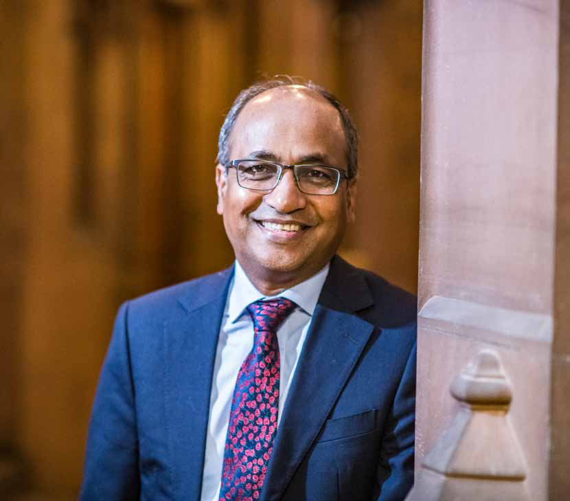
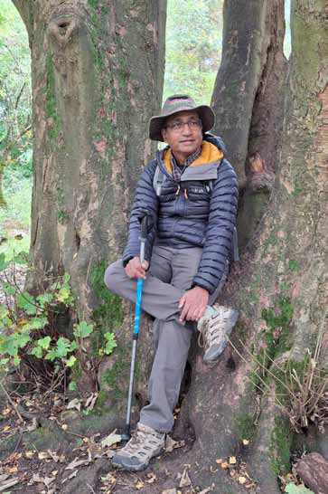
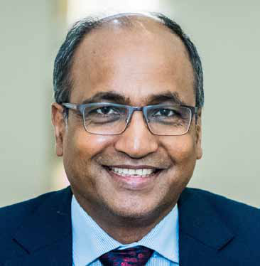
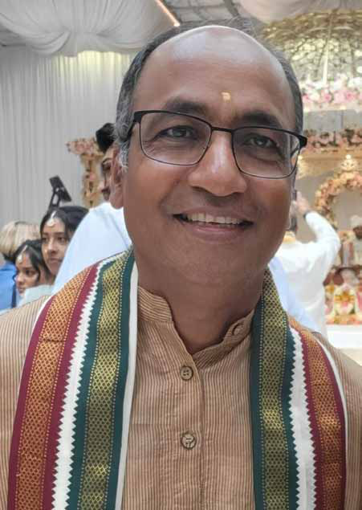

BY: Kaniyan Pungundran fzpad; G+q;Fd;wd;
BY: Kaniyan Pungundran fzpad; G+q;Fd;wd;
Jaffna Monitor
hellojaffnamonitor@gmail.com
36
Professor Mahesan Nirmalan, originally from
a humble middle-class family in Karainagar,
has ascended to become one of the most
internationally renowned figures in his field.
He currently holds the prestigious title of
Professor of Medical Education and serves as
a Consultant in Critical Care Medicine at the
Manchester Royal Infirmary in the United
Kingdom. Alongside his academic chair, he
practices as a consultant in one of the most
demanding and high-stakes specialties—
intensive care medicine.
Professor Mahesan Nirmalan’s influence
transcends borders. He is a distinguished
member of the International Scientific
Advisory Group for UK Research and
Innovation (UKRI), the principal body
governing research funding for the UK
Government. His academic reach extends
even further with Honorary Chairs in
Intensive Care Medicine at the University of
Cairo, Egypt, and in Post-Conflict Studies at
the University of Gulu, Uganda. Adding to
his global contributions, he also serves on
the advisory board of the Centre of Digital
Epidemiology (CODE) at the University
of Jaffna, Sri Lanka, driving cutting-
edge advancements in public health and
epidemiology.
These are excerpts from our exclusive
interview with Professor Nirmalan.
Could you share with us insights
into your early life, particularly how
growing up in Sri Lanka, and Jaffna
specifically, influenced your personal
and intellectual development? How
have these formative experiences
shaped the person you are today?
I was born into a middle-class family in
Karainagar, Jaffna. My parents were educators
from a traditional Hindu background,
which meant my upbringing was steeped
in the cultural and religious richness of
temples, Njthuk; (Thevaaram)—sacred
hymns dedicated to Lord Shiva, jpUthrfk;
(Thiruvasagam)—a collection of devotional
hymns by the poet-saint Manickavasagar,
jpUntk;ghit (Thiruvempavai)—hymns sung
in worship of Lord Shiva during the Tamil
month of Margazhi, and literary classics such
as nghd;dpapd; nry;td; (Ponniyin Selvan)—a
historical novel by Kalki Krishnamurthy set
in the Chola dynasty, and rptfhkpapd; rgjk;
(Sivagamiyin Sabatham)—another historical
novel by Kalki focusing on Pallava dynasty
politics and intrigue. I was also exposed to
fu;ehlf ,ir (Carnatic music), tpy;Y
ghl;L (Villu Paatu)—a traditional form of
storytelling accompanied by a bow-shaped
musical instrument, and fjh gpurq;fk;
(Katha Prasangam)—a dramatic form of
storytelling blending narration, music, and
performance—all of which have profoundly
shaped me as an individual to this day.
My father, an old-school English teacher, and
both my parents, graduates of the University of
Peradeniya, provided a bilingual upbringing.
At home, we predominantly conversed in
English. When my parents were transferred to
Bandarawela in the 1970s, I learned to read,
write, and speak Sinhala fluently.
I was fortunate to study at some of the best
institutions in the country, including St.
Thomas’s Preparatory School in Bandarawela,
BY:
Kaniyan Pungundran
fzpad; G+q;Fd;wd;
Jaffna Monitor hellojaffnamonitor@gmail.com 37 Jaffna Hindu College, and the Colombo Medical Faculty. During my time in Colombo, I resided in a Catholic medical hostel known as ‘Kittiyakkara’ with around 50 Sinhala students, most of whom hailed from the outstations. I maintain close relationships with all these institutions and have built lifelong connections with people from all communities. Growing up, I was deeply influenced by the novels of Jayakanthan and the poetry of Subramaniya Bharathy, both of which shaped my social conscience and political worldview. I personally witnessed pivotal moments in Sri Lanka's history: the burning of the Jaffna Library in 1981, the 1983 riots, and my subsequent return to Jaffna on a refugee cargo ship. I sought refuge in Nallur Temple when the conflict erupted between the LTTE and the IPKF. I narrowly escaped death in a harrowing incident when the van I was traveling in was fired upon by a military helicopter, tragically resulting in the deaths of a few fellow passengers. I also lived through the infamous Pettah Bombing at the Colombo Central Bus Station, the massacres at Kokillai and Nai Aru, and the mass eviction of Muslims from the Jaffna Peninsula.

Jaffna Monitor
hellojaffnamonitor@gmail.com
38
The JVP uprising of 1988/89 and its brutal
suppression left an indelible mark on me.
Some of my closest friends from Kittiyakkara
were kidnapped and killed in cold blood
during those tumultuous times. These
cumulative experiences have granted me a
unique perspective on Sri Lanka’s complex
socio-political upheavals, allowing me to view
the ethnic conflicts and challenges through the
lens of all its citizens.
After completing my postgraduate training
at the Postgraduate Institute of Medicine
in Colombo and serving as a doctor at the
General Hospital for five years, I moved to the
UK in 1995 to further my studies. I currently
reside in Manchester, in the North West
of England, where I continue to work and
contribute to both the medical and academic
fields.
Despite being a fulltime clinical
academic at the University of
Manchester, UK and a Consultant in
a busy clinical specialty at one of the
largest NHS Trusts in the UK, we can
see that you are increasingly drifting
into social activism in Sri Lanka. Why?
And what makes you think that people
in Sri Lanka would take your views
seriously?
Social responsibility is a key objective at the
University of Manchester, and as a result, all
staff are encouraged to engage in activities that
foster positive societal impact. When the Sri
Lankan civil war ended in 2009, I became a
trustee of the Meththa Foundation UK (MF),
a charity dedicated to the rehabilitation of
amputees across Sri Lanka, including the war-
torn North and East.
I also had the privilege of applying the lessons
we learned in Sri Lanka to Northern Uganda, a
region similarly ravaged by prolonged conflict
and its devastating aftermath.
These experiences instilled in me the profound
realization that conflict prevention is not the
responsibility of governments or organizations
alone, but of all citizens. Reflecting on Sri
Lanka's past, it is clear that its problems
were perpetuated by vested interests that
suppressed the reasonable majority within all
communities. I now deeply regret having once
been part of that silent majority—whether out
of fear or self-preservation.
The University of Manchester has provided me
with the platform to redress this silence, and I
am committed to speaking out and articulating
these complex issues objectively, cutting across
ethnic divides. Whether my views are taken
seriously or not is beyond my control—but I
am resolved to contribute to the dialogue.
You have been a frequent visitor to
Sri Lanka since leaving the country
in 1995, and you have visited Jaffna
regularly since the end of the war in
2009. What are your thoughts on how
society in the Jaffna peninsula has
evolved since the war ended?
I return to Sri Lanka a few times each year for
academic and social commitments, mostly
in Colombo. Since the war ended, I have also
visited Jaffna frequently and engaged with
youth from diverse backgrounds.
Over this period, I’ve observed that the
orthodoxy, regionalism, and sectarianism that
Jaffna Monitor
hellojaffnamonitor@gmail.com
39
once dominated our society are rapidly fading,
and schoolchildren are developing a keen
interest in broader development, including
multilingual skills and sports.
Leading schools are nurturing a new
generation of boys and girls who are able to
interact with their southern counterparts on
equal footing. The state has made significant
investments in infrastructure, resulting in
economic transformation on a scale never seen
before. Limited but progressive investments
have led to changes in sporting facilities,
cultural centers, organic agriculture, and
tourism—positive developments overall.
However, these changes have not been
inclusive, and many still live in abject poverty
and marginalization. A significant number of
war victims remain excluded from society and
in need of active support. For example, many
young people in the Vanni region with severe
spinal cord injuries have had to form self-
support groups to address their medical needs,
as wider societal support remains inadequate.
The extent of abuse of vulnerable children and
single women is poorly understood and largely
unaddressed. Additionally, the rapid changes
in regional demography, proselytization under
the guise of poverty alleviation, and the grief
endured by families with missing loved ones
remain serious challenges.
A growing desire for emigration among
the youth leaves them feeling unsettled or
dissatisfied, and cultural practices that once
held the community together are being eroded
by external influences such as South Indian
films and the unchecked inflow of diaspora
funds. This has created a stark disconnect
between economic development and measures
of happiness or contentment. It may explain
the high rates of suicide, substance misuse, and
violence.
In your interviews, you’ve expressed
concerns about young people wanting
to leave Sri Lanka and the serious
implications of this trend. However,
a skeptic might argue that it could
be seen as hypocritical for someone
who left Sri Lanka and thrived abroad
to advise today’s youth against
emigration. How would you respond to
that perspective?
Yes, it is indeed hypocritical, and I do not
wish to pretend otherwise. However, I ask
for understanding. We are all shaped by
circumstances, and what happened to me
and my ‘generation of migrants’ was part of
a broader socio-cultural-political wave that

Jaffna Monitor hellojaffnamonitor@gmail.com 40 encouraged emigration. Of course, the war further fueled this underlying trend within the Tamil community, particularly in Jaffna. The path to success was clear: study hard, attend university to pursue medicine, engineering, or accountancy, get married, and then emigrate. This was the norm, the standard by which success was measured. Many great men and women returned after spending brief periods abroad to serve their communities and country, but unfortunately, I was not one of them. The circumstances in the 1990s simply didn’t allow for that. However, emigration during our time was limited in scale and did not threaten the community’s stability. Today, the situation has reached epidemic proportions, endangering the very fabric of the Tamil community. For example, the Jaffna Monitor issue for October highlighted that the number of members of parliament allocated to the Jaffna district for the upcoming general elections has been reduced from 7 to 6, due to the decline in registered voters. If current trends persist, this number could decrease even further in the next election (JM October 2024). One of my friends told me there is now a shortage of people to carry the deity during annual temple festivals in remote towns and villages. Many of the islands surrounding the Jaffna peninsula are nearly deserted, unable to sustain their traditional farming and fishing lifestyles. These changes pose the single greatest threat to the stability of the Tamil community in Sri Lanka. This is why I believe it is our duty to raise awareness, especially among our friends and fellow countrymen in the diaspora. Jaffna has a long history of migration in pursuit of opportunities and wealth. In the late 19th and early 20th centuries, many migrated to Southeast Asia, followed by waves to the Middle East and Africa in the 1970s. Before World War II, substantial remittances were sent back by Jaffna migrants in Malaysia and Singapore. However, their descendants no longer maintain strong ties to Jaffna, and these remittances have largely dwindled. Now, a new generation of first-generation migrants to Western countries has taken their place. In your interviews, you've highlighted that relying on these remittances is short-sighted, as future generations may not maintain the same connection to Sri Lanka. Why do you view this as a problem? Isn't it possible that a similar pattern could emerge, with each new generation of Tamil migrants sending remittances from different destinations? The migration you refer to was limited in scale and, as mentioned before, did not destabilize our community. This issue cannot and must not be viewed solely through an economic lens or based on the sustainability of inward remittances. Moreover, the world has changed significantly, and the West is now adopting a very different stance on immigration. Ethno-nationalism is on the rise across many Western countries, and sooner or later, restrictions will likely be imposed on the outward flow of resources or funds associated with the split loyalties often seen among immigrant populations. There are no viable alternatives to developing the local economy so that communities and individuals can thrive and achieve their life ambitions within their own countries. You may have noticed the recent riots in London
Jaffna Monitor
hellojaffnamonitor@gmail.com
41
and several other UK cities protesting against
mass immigration. This should serve as a clear
warning to our people that the future of our
community and culture lies in Sri Lanka, not
in the West—no matter how green the other
side may seem at present.
How do you respond to those who
claim that the 'Tamil problem' was
merely a 'terrorist problem' resolved
in 2009, and that no further political
solutions are needed for the Tamil
community?
Whether we like it or not, there is a prevailing
view among certain sections of the Sinhala
right that the so-called ‘Tamil problem’ is
merely a figment of imagination, created and
propagated by Tamil politicians for electoral
gains. They argue that the issues affecting the
Tamil people are no different from those faced
by all citizens of the country, and therefore, the
only real problem that required a solution was
the ‘terrorist problem.’ In their view, since this
‘terrorist problem’ was decisively resolved at
the banks of Nandikadal in 2009, the country
can now simply move on, focusing solely on
economic development.
Many prominent members of this group have
publicly claimed that there are no political
problems unique to the Tamils that require
a political solution. Despite being small in
number, this group is highly influential and
continues to shape political discourse in the
South. The election of Mr. Gotabaya Rajapaksa
to the presidency in 2019 is a clear indication
of this group’s influence.
In my view, it is essential to approach the
challenges faced by all minority communities
objectively and articulate them in a way that
an ordinary person can understand and
empathize with. Genuine grievances that led
to the armed conflict cannot simply be ‘wished
away,’ as some might hope, as this hinders
the country from realizing its full potential.
Additionally, it creates opportunities for
internal players to exploit these differences
for electoral gains and for external forces
to advance their own regional geopolitical
interests.
Prolonged conflict inevitably leads to mutual
destruction, as evidenced by current events
in West Asia. It is the responsibility of all of
us to ensure that we do not become trapped
in repeated cycles of violence due to these
unresolved grievances.
The Tamil question has been
extensively discussed in the media,
in Parliament, on election platforms,
and in international forums. Given this
background, some argue that there is
no need or purpose in rearticulating
these same issues. What is your
perspective on this?

Jaffna Monitor
hellojaffnamonitor@gmail.com
42
Since the time I became politically aware (mid-
70s onwards), the question of ‘Tamil rights’
and ‘Tamil identity’ has been framed in highly
emotive language, laden with ethno-nationalist
undertones by all parties involved.
In my understanding, this began soon after
independence and reached its peak during
the period leading up to the ‘Vaddukoddai
Resolution,’ which called for a separate state,
and the 1977 elections that followed.
The Jayawardene government further fueled
this divisive debate by recruiting short-
sighted politicians and pseudo-intellectuals to
present these issues to the electorate, fostering
paranoia and fear. For instance, textbooks such
as Kumarodaya (Book 2) portrayed the Tamil
people to young Sinhala children as “Tjqka yß
kmqre ñksiaiqු” (They are very nasty people).
In my view, the Tamil political leadership has
consistently failed to effectively communicate
the problems faced by the Tamil people to the
ordinary, decent Sinhala electorate in a way
that they could understand and empathize
with.
The existing language barrier only
compounded these issues, and even today,
many ordinary Sinhalese genuinely believe
that any attempt to solve the ‘ethnic problem’
through power devolution is simply an effort
to divide the country by ‘global forces,’ acting
under the influence of a financially powerful
Tamil diaspora.
As long as this mindset prevails in the South,
no solution will emerge from any government
in Colombo. It simply cannot happen in a
democracy. Imposing such a solution through
external pressure is not only immoral but
also a self-defeating exercise. In this context,
I firmly believe that there is a need to
rearticulate our challenges in a responsible and
thoughtful manner—one that the ordinary
Sinhala person can comprehend, relate to, and
sympathize with. The Dissanayake presidency
provides us an opportunity to do so.
If so, In your view, what are the
key challenges facing minority
communities in general, and the Tamil
community in particular?
In my view, there are three key challenges that
specifically affect all minority communities,
including the Tamil community:
i. Physical security:
There is a significant challenge for an average
Tamil person, particularly one not conversant
in Sinhala, when seeking support or assistance
from the security forces. While this may not
pose a major issue in daily life, it becomes a
significant challenge in the face of organized
political violence against the community. The
events of 1958, 1977, 1981, and 1983 have left
permanent scars and fears in the collective
psyche of the Tamil community. Similarly,
recent events like the Aluthgama and Digana
riots have brought the question of physical
security to the forefront for the Muslim
community. In many of these instances, the
security forces have been either ineffective or
unwilling to intervene for reasons that are well
known.
ii. Loss of cultural identity:
Cultural heritage and the identity formed
through it are invaluable. The Tamil
community has a legitimate fear of
losing this identity due to the relentless
demographic changes within the country.
There is compelling evidence that many Tamil
Jaffna Monitor hellojaffnamonitor@gmail.com 43 communities across Sri Lanka have gradually shed their original identities and assimilated into Sinhala culture. Even a casual visit to towns and villages along the coastal belt from Puttalam to Negombo bears witness to this transformation. While gradual assimilation over generations is a natural process in a multicultural country, the process needs to be organic and gradual allowing time and space for the changes to be embedded. However, attempts to expedite this transformation through systematically enforced and centrally-supported land settlement policies set off alarm bells regarding the loss of identity and the so-called ‘Sinhalisation.’ This legitimate grievance must be acknowledged and addressed. iii. Belonging and ownership: The notion that the country belongs solely to one community, with everyone else viewed as an ‘external person’ or an ‘outsider/invader,’ has been systematically ingrained in the collective psyche of the Sinhala people. A recent reference to ‘Landowners’ vs ‘Tenants’ by a prominent and controversial social leader encapsulates this mindset. This idea is deeply rooted, reinforced through literature, mythology, and even children's textbooks. Recent scientific studies confirm, beyond reasonable doubt, that the Sinhalese and Tamils share a common genetic pool—they are, biologically and genetically, one people. In reality, there are no two distinct races. However, these findings have unfortunately not altered the damaging social constructs propagated through mythology and pseudo- intellectualism. These three issues encapsulate the key challenges faced by the Tamil and Muslim communities in Sri Lanka. They can be resolved through appropriate constitutional arrangements without inflaming fears or anxieties among ordinary citizens. What is needed is an honest and fair narrative from leadership, and once again, the Dissanayake presidency provides a window of opportunity. I hope this opportunity, emerging in the wake of an economic catastrophe rooted in the country’s disharmony, will not be wasted. You’ve highlighted the need for a conversation in Sri Lanka around end- of-life care, with a focus on quality of
Jaffna Monitor
hellojaffnamonitor@gmail.com
44
life and death. But what about elderly care? In
our society, there is an expectation that children
will care for their aging parents. However, some
argue that this can be impractical, particularly
for children without access to a village-like
support network. Should we, as a society, first
have a conversation about the quality of elderly
care before moving on to discussions about
end-of-life issues?
I fully agree that a conversation on elderly care is urgently
needed. The purpose of my visit to Sri Lanka in August
was to attend the annual scientific meeting of the Sri
Lanka Medical Association (SLMA), which included a
workshop on end-of-life care and
the perception of ‘death’ across
different cultural traditions.
However, I also acknowledge
that a discussion on elderly care
is equally important, especially
given the shifts in demographics
and lifestyle. In my view, while
the state has an obligation to care
for the elderly, this responsibility
cannot and must not rest solely
on the state. We cannot distance
ourselves from the traditional
belief in our country that there
exists an unwritten covenant
between parents and children, a
bond that inherently demands
sacrifice from both sides at
different stages of life.
This covenant is deeply rooted
in our history, culture, tradition,
and religions. Abandoning
it on the grounds that ‘it is
incompatible with modern
life’ would be detrimental on
multiple fronts. The love and
responsibility between parents
and children form the bedrock
of a compassionate society.
While the state must intervene
when necessary, it should not
adopt policies that systematically
undermine the obligations
children have towards their aging
parents.
In relation to these broader
issues, what do you see
as the strengths and
weaknesses of medical
education in Sri Lanka?

Jaffna Monitor
hellojaffnamonitor@gmail.com
45
Traditional medical education in Sri Lanka
was heavily focused on factual knowledge. It
placed a strong emphasis on the acquisition
of scientific facts, with students being
tested in great detail. As a result, students
prioritized memorizing and mastering factual
knowledge over more subtle, and perhaps less
testable, skills such as empathy, attitudes, and
performance.
However, I am aware that this is changing
rapidly. For instance, the Colombo Medical
Faculty now has a systematic approach to
incorporating medical humanities into its core
undergraduate program. I understand reliably
that similar changes are taking place in many
other medical faculties across the country as
well.
Finally, what are your views on the role
of the Tamil diaspora in Sri Lanka's
evolving socio-economic and political
landscape?
I see the diaspora as a double-edged sword.
On one hand, they are integral to the revival
of our post-war society and economy. Many
have been extremely generous in financially
supporting their families, schools, places of
worship, and the wider community.
The revival we see across the peninsula
would not have been possible without the
interventions of the diaspora. Some have
played key roles in establishing major projects
that generate employment and provide
livelihood support. These investments are most
welcome and are gratefully acknowledged by
the communities involved.
Many past pupils' associations have made
strategic and generous investments in their
schools, enabling them to reach new heights in
terms of available facilities. As a direct result,
children from these schools are now able to
compete nationally on an equal footing.
On the other hand, despite their material
wealth and professional success, many in the
diaspora yearn for their lives back ‘home’ at a
fundamental level. A section of the diaspora
carries deep scars and resentments stemming
from past experiences, losses, and injustices.
Due to language barriers, many may not fully
understand the injustices and marginalization
that rural Sinhala youth also faced, resulting
in two uprisings and their brutal suppression.
While the scale of the perceived injustices and
structural destruction differed, the negative
experiences across various segments of society
had many parallels. However, there was no
space to view these problems through the lens
of the other side.
There was no opportunity for the
‘Manamperies of Kataragama’ and the
‘Isaipriyas of the Vanni’ to come together—
the politicians and pseudo-intellectuals on
all sides ensured that. Due to these scars and
resentments, not all interventions by segments
of the diaspora are beneficial to the political
discourse needed for our community and the
country to move forward.
There is a need for the diaspora to recognize
the changing socio-political realities on the
ground—in the country, region, and world—
and to adjust their narratives accordingly.
While it is important to remember history,
it is equally important to ensure that the
scars of the past are not passed on to future
generations. History must serve as a guide
to the future, not as a chain binding us
to the collective mistakes of the past. For
the community and the country to move
forward, a positive outlook within the Tamil
diaspora is essential—however difficult that
transformation may be.